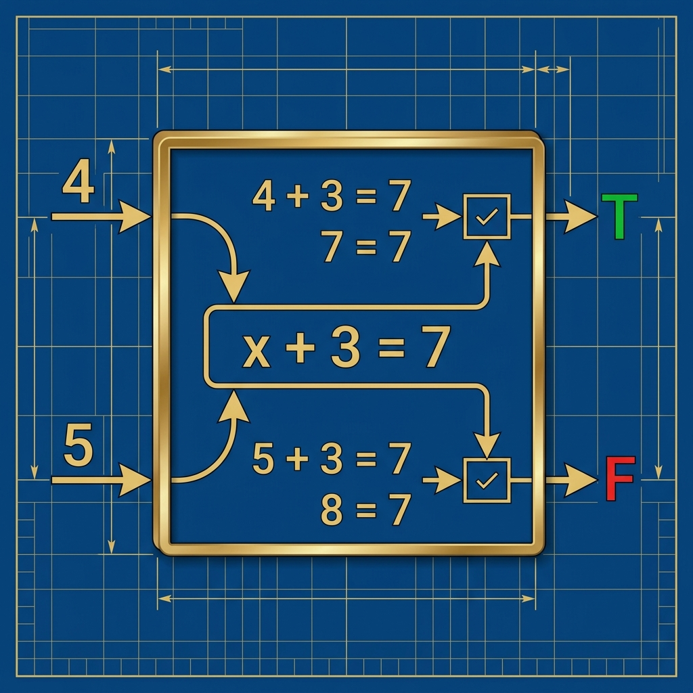
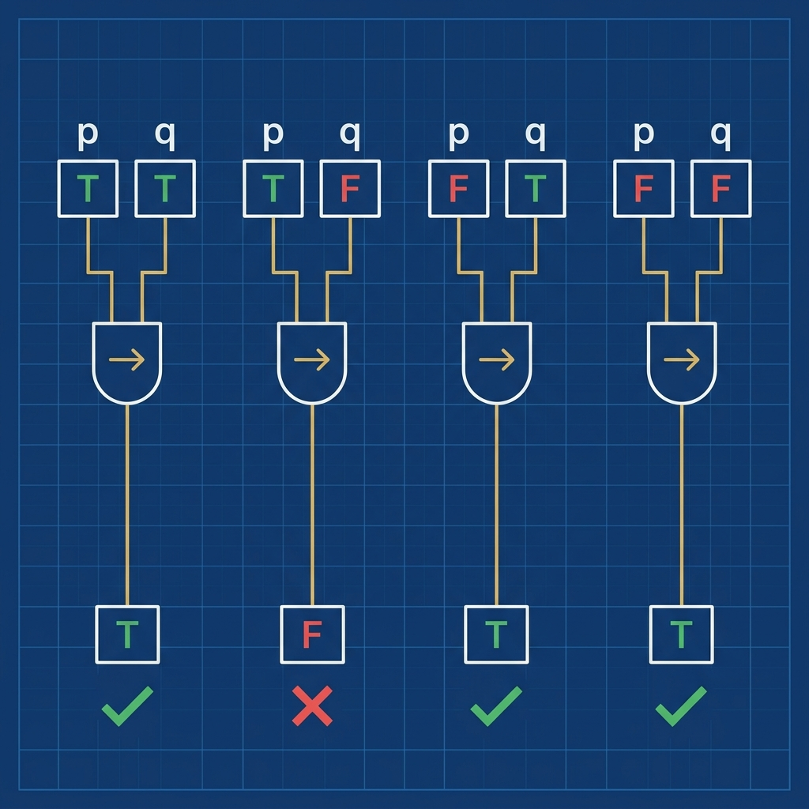
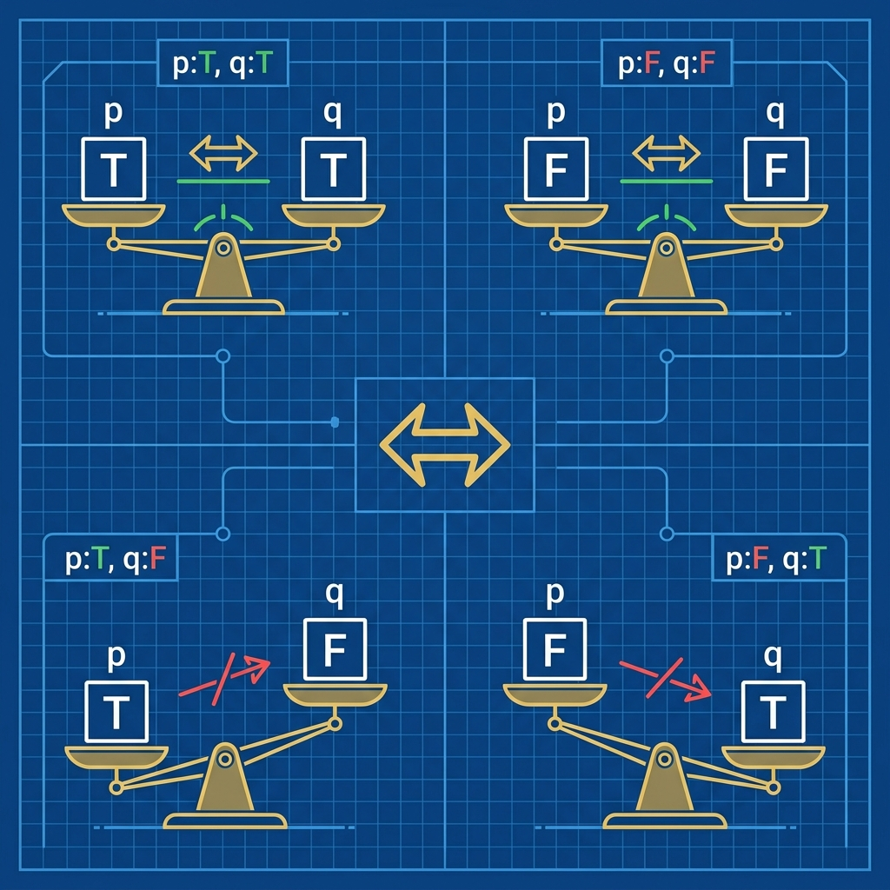

| สัญลักษณ์ | ชื่อ | อ่านว่า |
|---|---|---|
| ¬p | นิเสธ (Negation) | ไม่ p |
| p ∧ q | ประพจน์เชื่อม (Conjunction, AND) | p และ q |
| p ∨ q | ประพจน์เลือก (Disjunction, OR) | p หรือ q |
| p → q | ประพจน์มีเงื่อนไข (Implication) | ถ้า p แล้ว q |
| p ↔ q | เงื่อนไขสองทาง (Biconditional) | p ก็ต่อเมื่อ q |
| p | q | ¬p | p ∧ q | p ∨ q | p → q | p ↔ q |
|---|---|---|---|---|---|---|
| T | T | F | T | T | T | T |
| T | F | F | F | T | F | F |
| F | T | T | F | T | T | F |
| F | F | T | F | F | T | T |
| p | q | p ∧ q |
|---|---|---|
| T | T | T |
| T | F | F |
| F | T | F |
| F | F | F |
| p | q | p ∨ q |
|---|---|---|
| T | T | T |
| T | F | T |
| F | T | T |
| F | F | F |
| p | ¬p |
|---|---|
| T | F |
| F | T |
| p | q | p → q |
|---|---|---|
| T | T | T |
| T | F | F |
| F | T | T |
| F | F | T |

| p | q | p ↔ q |
|---|---|---|
| T | T | T |
| T | F | F |
| F | T | F |
| F | F | T |

| p | q | p → q | q → p | (p→q)∧(q→p) | p ↔ q |
|---|---|---|---|---|---|
| T | T | T | T | T | T |
| T | F | F | T | F | F |
| F | T | T | F | F | F |
| F | F | T | T | T | T |
| p | q | ¬p | ¬p ∧ q |
|---|---|---|---|
| T | T | F | F |
| T | F | F | F |
| F | T | T | T |
| F | F | T | F |
if (isMember && (age >= 60 || hasCoupon)) { getDiscount(); }